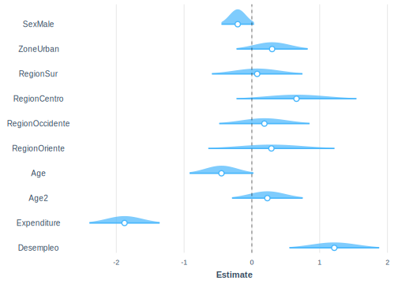
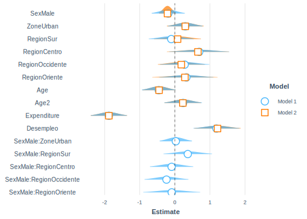

8.1 Modelo de regresión logistica para proporciones
La regresión logística es un método de regresión que permite estimar la probabilidad de éxito de una variable cualitativa binaria en función de otras covariables continuas o discretas. La variable de interés es de tipo binario o dicotómico, es decir, tomará el valor de uno (1) si cumple con la condición que se está observando, y cero (0) en caso contrario. De este modo, las observaciones son separadas en los grupos formados según el valor que tome la variable empleada como predictor.
Si una variable categórica con dos posibles niveles se codifica mediante unos (1) y ceros (0), es posible matemáticamente ajustar un modelo de regresión lineal \(\beta_0 + \beta_1 x\) usando alguna técnica de estimación como mínimos cuadrados. Pero surge un inconveniente en esta aproximación, y es que, al tratarse de una recta, es perfectamente posible, obtener valores estimados que sean menores que cero, o incluso mayores que uno, lo cual, claramente va en contravía con la teoría, que requiere que las probabilidades siempre se encuentren dentro del rango [0 ,1].
El objetivo de la regresión logística es modelar el logaritmo de la probabilidad de pertenecer a cada grupo; por lo que finalmente la asignación se realiza en función de las probabilidades obtenidas. De esta manera, la regresión logística es ideal para modelar la probabilidad de ocurrencia de un evento en función de diversos factores. Por ende, este tipo de modelos son útiles para correlacionar la probabilidad de ocurrencia de un fenómeno con otras covariables. Por ende la probabilidad aproximada del suceso se denotará mediante una función logística del tipo:
\[ \pi(\textbf{x})= Pr(y = 1 | \textbf{x}) = \frac{\exp\{\textbf{x}'\boldsymbol{\beta}\}}{1+\exp\{\textbf{x}'\boldsymbol{\beta}\}} \]
Se debe recalcar que no se debe usar una regresión lineal cuando se tiene una variable de tipo binario como variable dependiente, ya que no es posible estimar la probabilidad del evento estudiado de manera directa, por esta razón se emplea una regresión logística, en la que para obtener las estimaciones de la probabilidad del evento estudiado se debe realizar una transformación (logit). Ahora bien, al aplicar la función logit a ambos lados, la expresión se torna similar al cálculo de una regresión lineal:
\[ g(\textbf{x})=logit(\pi(\textbf{x}))=ln \left\{ \frac{\pi(\textbf{x})}{1-\pi(\textbf{x})} \right \}= \textbf{x}'\boldsymbol{\beta} \]
De esta forma se asume que existe una relación de tipo lineal entre cada una de las variables explicativas y el logit de la variable respuesta. Obsérvese que existen al menos tres grandes diferencias entre la regresión logística y la regresión lineal. En primer lugar, en la regresión logística no se requiere una relación lineal entre las variables explicativas y la variable de interés; tampoco se requiere que los residuos del modelo guarden una distribución de tipo normal; y, finalmente, no es necesario que los residuos del modelo presenten una varianza constante, es decir que sean homoscedásticos.
Usando técnicas apropiadas que incluyan el diseño de muestreo complejo en la inferencia, la probabilidad estimada de que la variable de interés tome el valor uno, que a su vez es también la esperanza de la variable de interés, en un modelo de regresión logística es la siguiente:
\[ \hat{\pi}(\textbf{x})= \frac{\exp\{\textbf{x}'\hat{\boldsymbol{\beta}}\}}{1+\exp\{\textbf{x}'\hat{\boldsymbol{\beta}\}}} \]
La varianza de los parámetros estimados se calcula a partir de la siguiente expresión:
\[ var\left(\boldsymbol{\hat{B}}\right)=\boldsymbol{J}^{-1}var\left(S\left(\hat{\boldsymbol{B}}\right)\right)\boldsymbol{J}^{-1} \]
En donde
\[ S\left(B\right)=\sum_{h}\sum_{a}\sum_{i}w_{hai}\boldsymbol{D}_{hai}^{t}\left[\left(\pi_{hai}\left(\boldsymbol{B}\right)\right)\left(1-\pi_{hai}\left(\boldsymbol{B}\right)\right)\right]^{-1}\left(y_{hai}-\pi_{hai}\left(\boldsymbol{B}\right)\right)=0 \] y,
\[ D_{hai} = \frac{\delta\left(\pi_{hai}\left(\boldsymbol{B}\right)\right)}{\delta B_{j}} \]
Donde \(j=0,\dots,p\). Dado que el modelo tiene enlace logaritmo, para construir los intervalos de confianza se debe aplicar el función exponencial a cada parámetro,
\[ \hat{\psi}=\exp\left(\hat{B}_{1}\right) \]
Por ende, el intervalo de confianza estará dado por la siguiente expresión:
\[ CI\left(\psi\right)=\exp\left(\hat{B}_{j}\pm t_{df,1-\frac{\alpha}{2}}se\left(\hat{B}_{j}\right)\right) \]
Es importante anotar que la interpretación de los coeficientes de la regresión logística debido a lo no-linealidad que la caracteriza por momentos puede ser complicada, razón por la cual como primera medida se expondrá las similitudes con una regresión lineal clásica y también sus diferencias principales, todo esto, con el fin de llegar a una correcta interpretación de los modelos. Una de las similitudes entre los modelos lineales y los modelos logísticos, es que es posible interpretar los signos de la ecuación estimada de la misma manera en los dos casos, lo que quiere decir que el signo de la pendiente indica la relación de la variable frente a la probabilidad de ocurrencia del evento que explique la variable dependiente, así que, un signo positivo acompañando la covariable indica un aumento de la probabilidad de ocurrencia del evento al cumplir con las características de la covariable; y en caso contrario, un signo negativo indica la disminución de la probabilidad de ocurrencia del evento observado al cumplir con las características de la covariable. Por otro lado, al igual que con la regresión lineal, el intercepto solo se puede interpretar asumiendo valores cero para los otros predictores.
Ahora, la interpretación de los coeficientes de regresión entre un modelo logístico y un modelo lineal es bastante diferente, lo que significa que, aunque es posible interpretar los signos de los coeficientes no se interpreta la magnitud de manera directa, ya que la estimación de los coeficientes en la regresión logística corresponde a un logaritmo de probabilidades por lo que es necesaria la transformación previamente señalada.
Según Gelman y Hill (2019), los coeficientes de regresión logística exponencidos se pueden interpretar como razones de Odds. Luego, si dos resultados presentan las probabilidades de \((\pi,1-\pi)\), entonces \(\pi/(1-\pi)\) es llamado el Odds. De este modo, un Odds de 1, es equivalente a una probabilidad de 0.5, es decir, resultados igualmente probables. Ahora bien, Odds de 0.5 representa probabilidades de (1/3, 2/3). Dividiendo dos Odds, \(\pi_1/(1-\pi_1 ) /\pi_2/(1-\pi_2 )\) se obtiene una razón de probabilidades. Por ejemplo, una razón de Odds igual a 2 correspondería a un cambio de \(\pi=0.33\) a \(\pi=0.5\) o un cambio de \(\pi=0.5\) a \(\pi=0.67\). Una ventaja de trabajar con razones de Odds en lugar de probabilidades, es que es posible escalar de manera constante las razones de probabilidades indefinidamente sin llegar a los puntos límite de 0 y 1. Por ejemplo, pasar de un Odds de 2 a un Odds de 4 aumenta la probabilidad de 2/3 a 4/5; duplicar los Odss, nuevamente aumenta la probabilidad a 8/9, y así sucesivamente.
A continuación, se muestra el ajuste de un modelo logístico para la pobreza, que se considera el fenómeno de interés en este ejemplo. Las covariables que interesa relacionar son el sexo la zona y región de ubicación de la vivienda, la edad, la edad al cuadrado, el gasto y el estaod de desempleo. Para llevar a cabo la implementación de este modelo en R, se utiliza la función svyglm que tiene en cuenta el diseño muestral complejo:
mod_logistic <- svyglm(
formula = Pobreza ~ Sex + Zone + Region + Age +
Age2 + Expenditure + Desempleo,
family = binomial,
design = diseno
)
tidy(mod_logistic)| term | estimate | std.error | statistic | p.value |
|---|---|---|---|---|
| (Intercept) | 1.6780 | 0.4193 | 4.0016 | 0.0001 |
| SexMale | -0.2088 | 0.1222 | -1.7090 | 0.0903 |
| ZoneUrban | 0.2983 | 0.2677 | 1.1144 | 0.2676 |
| RegionSur | 0.0782 | 0.3407 | 0.2296 | 0.8189 |
| RegionCentro | 0.6580 | 0.4513 | 1.4579 | 0.1477 |
| RegionOccidente | 0.1846 | 0.3399 | 0.5432 | 0.5881 |
| RegionOriente | 0.2880 | 0.4748 | 0.6065 | 0.5454 |
| Age | -0.0248 | 0.0133 | -1.8717 | 0.0639 |
| Age2 | 0.0001 | 0.0002 | 0.8587 | 0.3924 |
| Expenditure | -0.0063 | 0.0009 | -7.1081 | 0.0000 |
| Desempleo | 1.2159 | 0.3379 | 3.5983 | 0.0005 |
La función tidy muestra que algunas de las covariables son significativas al 5%. En particular, el intercepto, el gasto y el estado de desempleo. A continuación, se presentan los intervalos de confianza en los cuales se pueden concluir sobre la significancia de los parámetros al revisar si el cero se encuentra dentro del intervalo:
| 2.5 % | 97.5 % | |
|---|---|---|
| (Intercept) | 0.8469 | 2.5090 |
| SexMale | -0.4510 | 0.0334 |
| ZoneUrban | -0.2323 | 0.8289 |
| RegionSur | -0.5971 | 0.7536 |
| RegionCentro | -0.2365 | 1.5525 |
| RegionOccidente | -0.4891 | 0.8584 |
| RegionOriente | -0.6531 | 1.2291 |
| Age | -0.0511 | 0.0015 |
| Age2 | -0.0002 | 0.0005 |
| Expenditure | -0.0080 | -0.0045 |
| Desempleo | 0.5461 | 1.8856 |
Para verificar de manera gráfica la distribución de los parámetros del modelo, se realizará un gráfico de estos usando la función plot_summs como se muestra a continuación,

Se puede observar en el gráfico que el número cero se encuentra dentro del intervalo de confianza de algunos parámetros, lo que confirma la no significancia de estos.
Para conocer si una variable es significativa en el modelo es común utilizar el estadístico de Wald que se basa en la razón de verosimilitudes. En este caso se contrastan el modelo con todos los parámetros (completo) con el modelo reducido, es decir, el modelo con menos parámetros (reducido). La estadística de prueba es la siguiente:
\[ G=-2\ln\left[\frac{L\left(\hat{\boldsymbol{\beta}}\right)_{reducido}}{L\left(\hat{\boldsymbol{\beta}}\right)_{completo}}\right] \]
El estadístico de Wald para cada una de las variables del modelo del ejemplo se calcula a continuación con la función regTermTest para las variables del modelo:
## Wald test for
## in svyglm(formula = Pobreza ~ Sex + Zone + Region + Age + Age2 +
## Expenditure + Desempleo, design = diseno, family = binomial)
## F = 16.01 on 1 and 109 df: p= 0.00011## Wald test for Sex
## in svyglm(formula = Pobreza ~ Sex + Zone + Region + Age + Age2 +
## Expenditure + Desempleo, design = diseno, family = binomial)
## F = 2.921 on 1 and 109 df: p= 0.09## Wald test for Zone
## in svyglm(formula = Pobreza ~ Sex + Zone + Region + Age + Age2 +
## Expenditure + Desempleo, design = diseno, family = binomial)
## F = 1.242 on 1 and 109 df: p= 0.27## Wald test for Region
## in svyglm(formula = Pobreza ~ Sex + Zone + Region + Age + Age2 +
## Expenditure + Desempleo, design = diseno, family = binomial)
## F = 0.5838 on 4 and 109 df: p= 0.68## Wald test for Age
## in svyglm(formula = Pobreza ~ Sex + Zone + Region + Age + Age2 +
## Expenditure + Desempleo, design = diseno, family = binomial)
## F = 3.503 on 1 and 109 df: p= 0.064## Wald test for Age2
## in svyglm(formula = Pobreza ~ Sex + Zone + Region + Age + Age2 +
## Expenditure + Desempleo, design = diseno, family = binomial)
## F = 0.7373 on 1 and 109 df: p= 0.39## Wald test for Expenditure
## in svyglm(formula = Pobreza ~ Sex + Zone + Region + Age + Age2 +
## Expenditure + Desempleo, design = diseno, family = binomial)
## F = 50.52 on 1 and 109 df: p= 1.3e-10## Wald test for Desempleo
## in svyglm(formula = Pobreza ~ Sex + Zone + Region + Age + Age2 +
## Expenditure + Desempleo, design = diseno, family = binomial)
## F = 12.95 on 1 and 109 df: p= 0.00048Concluyendo una vez más que las únicas variables significativas son el intercepto, el gasto y estado de desempleo, justo como se había mencionado anteriormente. Como es tradicional en el ajuste de modelos de regresión ya sea, clásico o generalizado, se pueden realizar ajustes con interacciones. A continuación, se presenta un ejemplo de cómo se ajustan modelos logísticos con la interacción entre sexo y zona y, sexo y región:
mod_logistic_int <- svyglm(
formula = Pobreza ~ Sex + Zone + Region + Age +
Age2 + Expenditure + Desempleo +
Sex:Zone + Sex:Region,
family = binomial,
design = diseno
)
tidy(mod_logistic_int) %>%
arrange(p.value)| term | estimate | std.error | statistic | p.value |
|---|---|---|---|---|
| Expenditure | -0.0063 | 0.0009 | -7.1574 | 0.0000 |
| (Intercept) | 1.6756 | 0.3886 | 4.3123 | 0.0000 |
| Desempleo | 1.1854 | 0.3356 | 3.5326 | 0.0006 |
| Age | -0.0253 | 0.0136 | -1.8664 | 0.0648 |
| RegionCentro | 0.6942 | 0.4376 | 1.5863 | 0.1157 |
| ZoneUrban | 0.2981 | 0.2518 | 1.1838 | 0.2392 |
| SexMale:RegionSur | 0.3697 | 0.3531 | 1.0469 | 0.2976 |
| Age2 | 0.0001 | 0.0002 | 0.8601 | 0.3917 |
| RegionOriente | 0.3285 | 0.3936 | 0.8347 | 0.4058 |
| RegionOccidente | 0.2810 | 0.3597 | 0.7811 | 0.4365 |
| SexMale | -0.1875 | 0.2412 | -0.7771 | 0.4389 |
| SexMale:RegionOccidente | -0.2372 | 0.3194 | -0.7427 | 0.4593 |
| RegionSur | -0.1013 | 0.3273 | -0.3096 | 0.7575 |
| SexMale:RegionCentro | -0.0915 | 0.3148 | -0.2907 | 0.7718 |
| SexMale:RegionOriente | -0.0885 | 0.4137 | -0.2139 | 0.8311 |
| SexMale:ZoneUrban | 0.0289 | 0.2350 | 0.1230 | 0.9024 |
Observando que ninguna de las interacciones tampoco es significativa en el modelo. El gráfico de la distribución de los parámetros del modelo con y sin interacciones se presenta a continuación:

El estadístico de Wald sobre los parámetros de interacción del modelo se rpesentan a continuación:
## Wald test for Sex:Zone
## in svyglm(formula = Pobreza ~ Sex + Zone + Region + Age + Age2 +
## Expenditure + Desempleo + Sex:Zone + Sex:Region, design = diseno,
## family = binomial)
## F = 0.01512 on 1 and 104 df: p= 0.9## Wald test for Sex:Region
## in svyglm(formula = Pobreza ~ Sex + Zone + Region + Age + Age2 +
## Expenditure + Desempleo + Sex:Zone + Sex:Region, design = diseno,
## family = binomial)
## F = 0.9353 on 4 and 104 df: p= 0.45